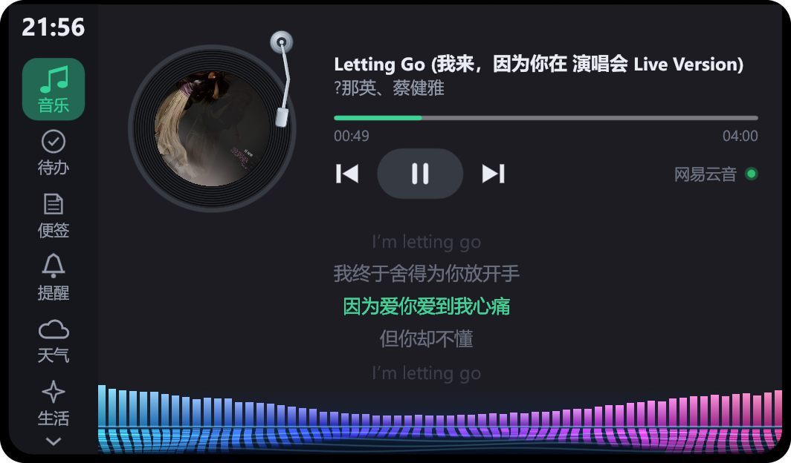
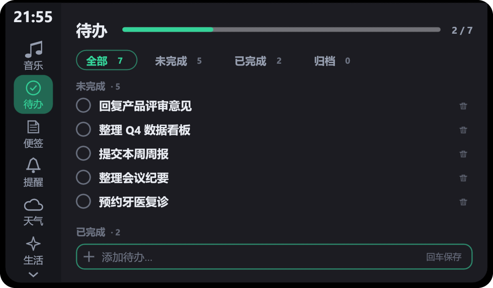
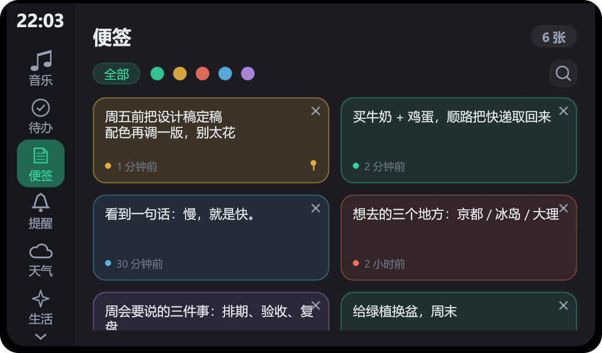
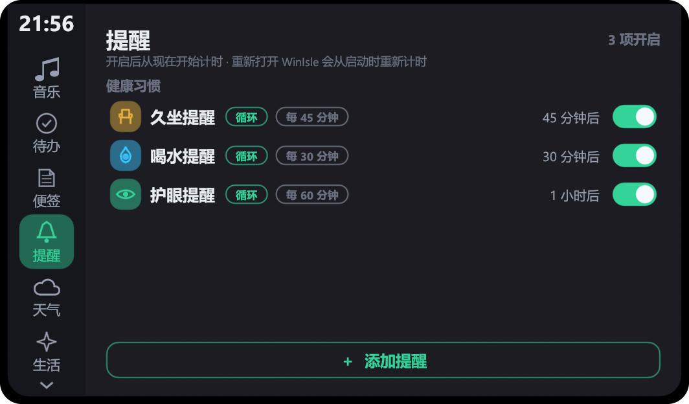
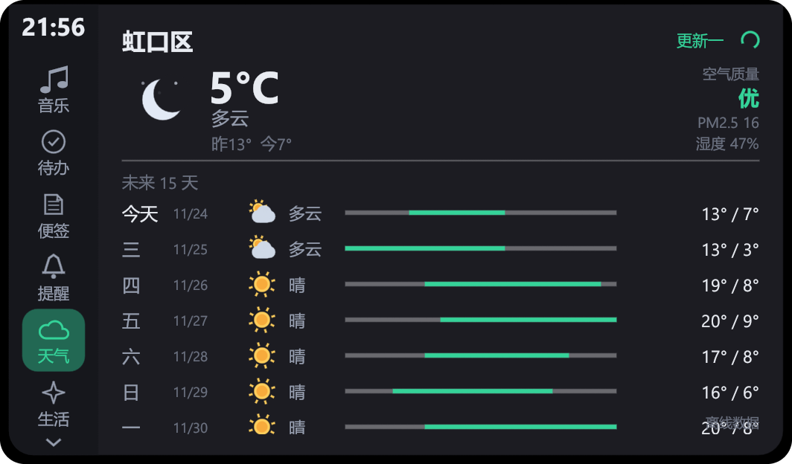
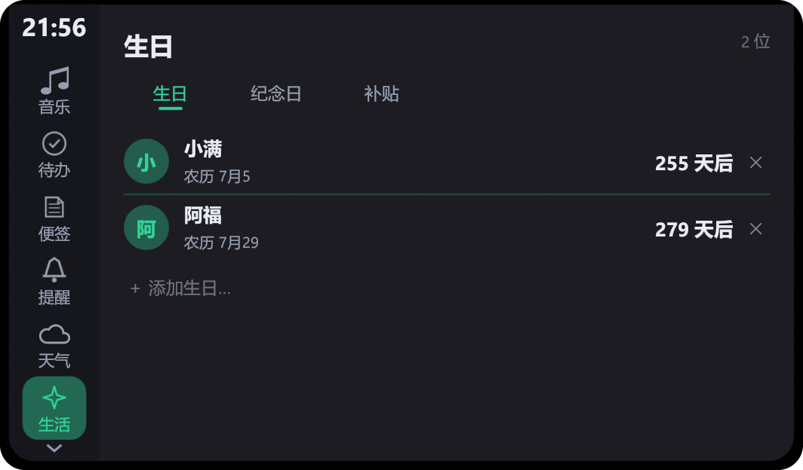

每个模块都为「顶部常驻、即点即用」而设计，不占任务栏、不打断你手上的事。
三层旋转唱片配摆动唱臂、真实专辑封面；卡拉 OK 式歌词随拍逐字点亮，长句自动跑马灯，尾声平滑上滚。

在岛内直接输入、回车即存，把脑子里的事立刻放下；勾选完成、归档整理，需要时随手搜索。

不设标题、随手写下；五种柔和颜色帮你随手分类，常用内容一键置顶，按颜色或关键词都能一眼找到。

自定义名称、图标、重复间隔与生效时段；到点用系统通知轻轻提醒，还带一圈柔和的呼吸光晕。

收起时只显示当前天气与温度，展开即可查看逐时与未来多天趋势；8 种程序化动态天气图标，支持城市搜索与自动定位。

生日倒计时支持公历 / 农历与生肖星座；纪念日记录每年或一次性；出差补贴按天分档、自动累计总补贴。

平时静静贴在屏幕顶部，不占任务栏、也不打断你。抬头就能看到正在播放的歌与天气时间；轻触一下，才展开成完整的控制中心。
除了看得见的功能，还有这些默默打磨的小地方。
没有音乐时，可以显示简洁时间，或 14 种带动画的机器人表情，让小岛在空闲时也有温度。
毛玻璃展开 / 收起、松手吸附回弹；左侧模块独立切换，状态过渡自然、可打断可逆。
拖到任意屏幕顶部都会自动吸附贴边，透明点击穿透，不挡你手底下的操作。
歌词、字号、透明度、圆角、开机自启与更新，全部在岛内完成，改动即时生效。
每日检查新版本，后台下载进度，一键安装后自动重启到新版，无需手动回官网。
配置与数据保存在程序所在目录，随安装迁移一起走，不上传云端，隐私友好。
WinIsle 还在持续打磨，未来会带来更多值得期待的更新。
安装包由本站直接提供，无需前往 GitHub；下载后可用下方 SHA256 校验文件完整性。